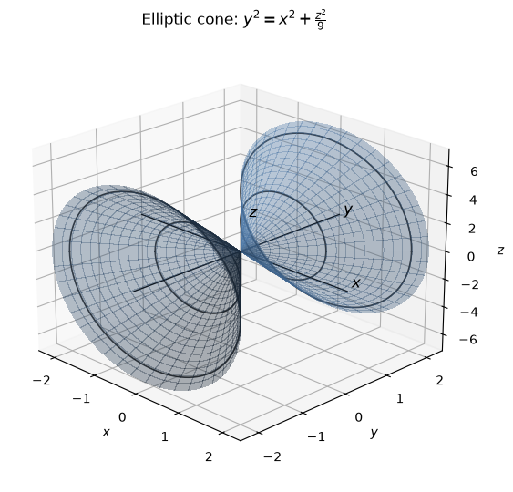
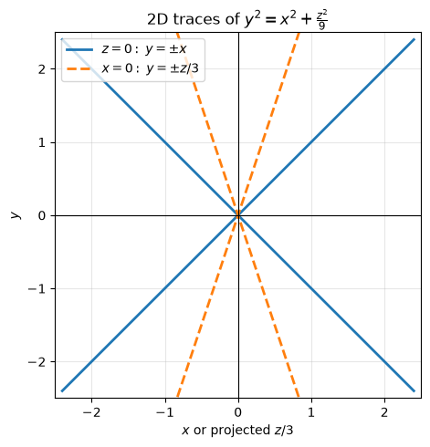
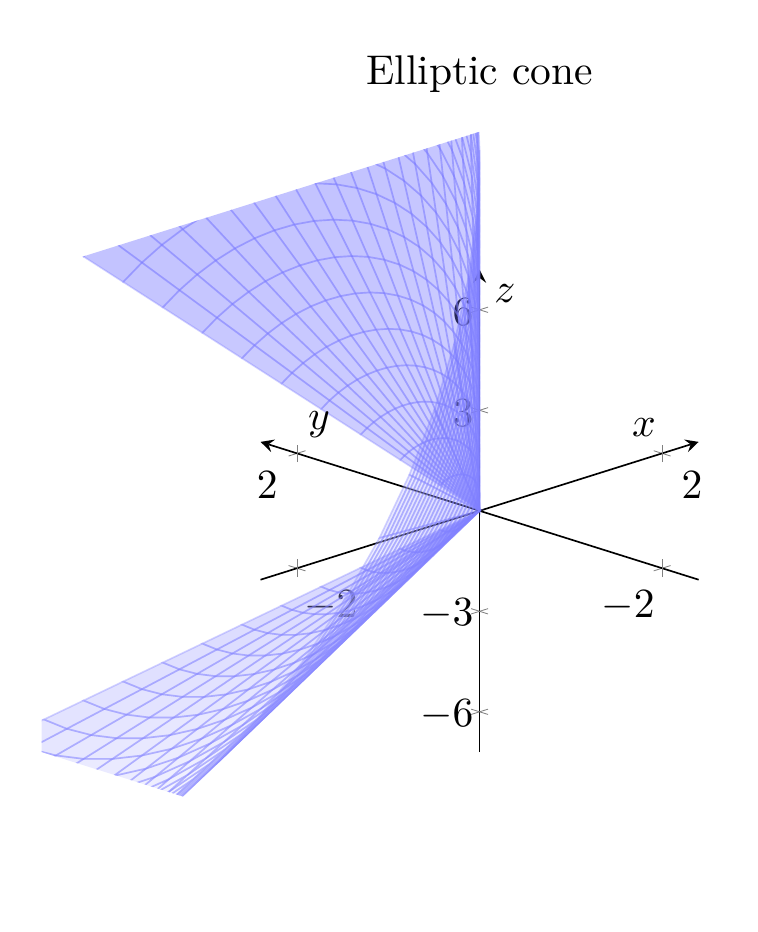
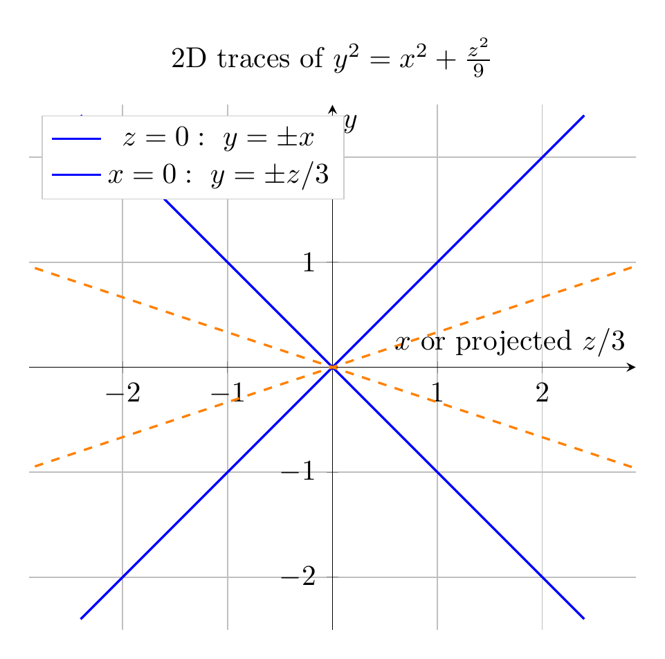

Path: mcma-Nex-N2-Pro/calculus-12.6.29/chat_20260825_013122_985711_utc_0800
Problem
Please solve the math problem in the image.

End of problem
Answer
Rewrite the equation as
$$
x^2+\frac{z^2}{9}-y^2=0,
$$
or, in standard cone form,
$$
\frac{y^2}{1^2}=\frac{x^2}{1^2}+\frac{z^2}{3^2}.
$$
This matches the standard form of an elliptic cone, with the $y$-axis playing the role of the cone’s axis.
To sketch it, look at traces:
- For a horizontal slice $y=c$,
$$
x^2+\frac{z^2}{9}=c^2
\quad\Longleftrightarrow\quad
\frac{x^2}{c^2}+\frac{z^2}{(3c)^2}=1,
$$
so the cross-section is an ellipse with semi-axes $|c|$ in the $x$-direction and $3|c|$ in the $z$-direction.
- In the plane $z=0$,
$$
y^2=x^2 \quad\Rightarrow\quad y=\pm x.
$$
- In the plane $x=0$,
$$
y^2=\frac{z^2}{9} \quad\Rightarrow\quad y=\pm \frac z3.
$$
Thus the surface is a double elliptic cone with vertex at the origin, opening in both the positive and negative $y$-directions.
$\boxed{\frac{y^2}{1^2}=\frac{x^2}{1^2}+\frac{z^2}{3^2};\ \text{elliptic cone with axis along the }y\text{-axis and vertex }(0,0,0)}$
---




\documentclass[border=10pt]{standalone}
\usepackage{pgfplots}
\pgfplotsset{compat=1.18}
\begin{document}
\begin{tikzpicture}
\begin{axis}[
width=9cm,
height=8cm,
axis lines=center,
xlabel=$x$, ylabel=$y$, zlabel=$z$,
xmin=-2.4, xmax=2.4,
ymin=-2.4, ymax=2.4,
zmin=-7.2, zmax=7.2,
view={-45}{22},
title={Elliptic cone},
samples=45,
samples y=24,
domain=-2.2:2.2,
y domain=0:2*pi,
grid=major,
ztick={-6,-3,0,3,6},
]
\addplot3[
surf,
shader=flat,
opacity=0.35,
colormap={bluewhite}{color=(white) color=(blue)},
draw=blue!50,
domain=-2.2:2.2,
y domain=0:2*pi,
variable=t,
variable y=u,
] ({u*cos(deg(t))}, {u}, {3*u*sin(deg(t))});
\end{axis}
\end{tikzpicture}
\end{document}

\documentclass[border=10pt]{standalone}
\usepackage{pgfplots}
\pgfplotsset{compat=1.18}
\begin{document}
\begin{tikzpicture}
\begin{axis}[
width=9cm,
height=8cm,
axis lines=center,
xlabel={$x$ or projected $z/3$},
ylabel={$y$},
xmin=-2.5, xmax=2.5,
ymin=-2.5, ymax=2.5,
grid=major,
axis equal,
title={2D traces of $y^2=x^2+\frac{z^2}{9}$},
legend style={at={(0.02,0.98)}, anchor=north west, draw=black!20}
]
\addplot[blue, thick, domain=-2.4:2.4, samples=100] {x};
\addplot[blue, thick, domain=-2.4:2.4, samples=100] {-x};
\addlegendentry{$z=0:\ y=\pm x$};
\addplot[orange, thick, dashed, domain=-7.2:7.2, samples=100] {x/3};
\addplot[orange, thick, dashed, domain=-7.2:7.2, samples=100] {-x/3};
\addlegendentry{$x=0:\ y=\pm z/3$};
\end{axis}
\end{tikzpicture}
\end{document}

End of answer